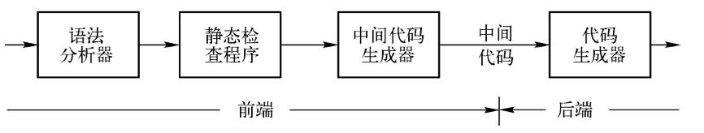

构建一个简单的编译器, 将 List 格式的代码转换成 C 格式的
原始代码
(plus 3 (abstract 9 6))
编译器
一个编译器的前端模型

根据编译过程来解决这个问题
- 生成
tokens - 根据
tokens生成ast - 转换
ast到newAst - 从
newAst生成代码
Tokenizer
将源代码转换为token流
const tokenizer = (input) => {
let pos = 0;
let tokens = [];
while (pos < input.length) {
let char = input[pos];
const PAREN_MATCH = /[\(\)]/;
if (PAREN_MATCH.test(char)) {
tokens.push({type: 'paren', value: char});
pos++;
continue;
}
const NAME_MATCH = /[a-zA-Z_]/;
const NAME_MATCH_ = /[a-zA-Z0-9_]/;
if (NAME_MATCH.test(char)) {
let verb = char;
while (NAME_MATCH_.test(input[++pos])) {
verb += input[pos];
}
tokens.push({type: 'name', value: verb});
continue;
}
const NUM_MATCH = /[0-9]/;
if (NUM_MATCH.test(char)) {
let verb = char;
while (NUM_MATCH.test(input[++pos])) {
verb += input[pos];
}
tokens.push({type: 'number', value: verb});
continue;
}
const WHITE_SPACE = /\s/;
if (WHITE_SPACE.test(char)) {
pos++;
continue;
}
throw new Error(`Unexpect token at ${pos}`);
}
return tokens;
};
module.exports = tokenizer;
Parser
将token流转换为AST
const parser = (tokens) => {
let current = 0;
const walk = () => {
let token = tokens[current];
if (token.type === 'number') {
current++;
return {
type: 'NumberLiteral',
value: token.value,
};
}
if (token.type === 'paren' && token.value === '(') {
token = tokens[++current];
let node = {
type: 'CallExpression',
name: token.value,
params: [],
};
token = tokens[++current];
while (
token.type !== 'paren' ||
(token.type === 'paren' && token.value !== ')')
) {
node.params.push(walk());
token = tokens[current];
}
current++;
return node;
}
throw new TypeError(token.type);
};
let ast = {
type: 'Program',
body: [],
};
while (current < tokens.length) {
ast.body.push(walk());
}
return ast;
};
module.exports = parser;
Traverser and Transformer
Traverser 提供了遍历 AST 的方法
Transformer 通过 Traverser 遍历语法树来修改 AST
Traverser
const traverser = (ast, visitor) => {
const traverseArray = (array, parent) => {
array.forEach((child) => {
traverseNode(child, parent);
});
};
const traverseNode = (node, parent) => {
let methods = visitor[node.type];
if (methods && methods.enter) {
methods.enter(node, parent);
}
switch (node.type) {
case 'Program':
traverseArray(node.body, node);
break;
case 'CallExpression':
traverseArray(node.params, node);
break;
case 'NumberLiteral':
break;
default:
throw new TypeError(node.type);
}
if (methods && methods.exit) {
methods.exit(node, parent);
}
};
traverseNode(ast, null);
};
module.exports = traverser;
Transformer
const traverser = require('./traverser');
const transformer = (ast) => {
let newAst = {
type: 'Program',
body: [],
};
ast._context = newAst.body;
traverser(ast, {
NumberLiteral: {
enter(node, parent) {
parent._context.push({
type: 'NumberLiteral',
value: node.value,
});
},
},
CallExpression: {
enter(node, parent) {
let expression = {
type: 'CallExpression',
callee: {
type: 'Identifier',
name: node.name,
},
arguments: [],
};
node._context = expression.arguments;
if (parent.type !== 'CallExpression') {
expression = {
type: 'ExpressionStatement',
expression: expression,
};
}
parent._context.push(expression);
},
},
});
return newAst;
};
module.exports = transformer;
Code Generator
将AST重新生成为代码
const codeGenerator = (node) => {
switch (node.type) {
case 'Program':
return node.body.map(codeGenerator).join('\n');
case 'ExpressionStatement':
return codeGenerator(node.expression) + ';';
case 'CallExpression':
return (
codeGenerator(node.callee) +
'(' +
node.arguments.map(codeGenerator).join(', ') +
')'
);
case 'Identifier':
return node.name;
case 'NumberLiteral':
return node.value;
default:
throw new TypeError(node.type);
}
};
module.exports = codeGenerator;